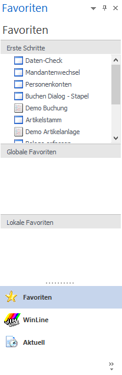
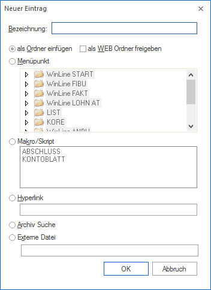

Wenn die Favoriten das erste Mal aufgerufen werden (bzw. wenn nach einer Neuinstallation das Programm das erste Mal gestartet wird), dann werden die "normalen" Favoriten aufgerufen, die aus 3 Bereichen bestehen:

ü Erste Schritte
In dem Bereich
"Erste Schritte" sind wichtige Menüpunkte in der WinLine (wie Datencheck,
Personenkontenstamm, Buchen, Belegerfassung etc.) angeführt.
ü Globale Favoriten
Hier können
Favoriten gespeichert werden, die für alle Anwender gleich sein sollen (z.B.
Suchkriterien für Archiv, Internet-Seiten etc.).
ü Lokale Favoriten
Hier können
die Favoriten der einzelnen Benutzer eingestellt werden.
Die globalen und lokalen Favoriten können beliebig verändert bzw. ergänzt werden. Hierfür steht das Fenster "Neuer Eintrag" zur Verfügung.
Neuer Eintrag
Wenn im Favoriten-Fenster die rechte Maustaste angewählt wird, dann kann die Funktion "Neuer Eintrag" gewählt werden. Dadurch wird ein neues Fenster geöffnet, in dem verschiedene Optionen ausgewählt werden können, die wieder unterschiedliche Aktionen auslösen.

Ø Bezeichnung
In diesem Feld wird die Bezeichnung eingetragen, unter welcher der Eintrag abgespeichert werden soll.
Ø Als Ordner einfügen
Wird diese Option gewählt, so wird ein neuer Ordner erstellt. Unter diesem Ordner können dann weitere Einträge erstellt werden.
Hinweis
Ordner werden mit dem Symbol dargestellt.
Ø Als WEB Ordner freigeben
Wird diese Option aktiviert, dann können diese Ordner auch als WEB-Ordner - also in der WEBEdition - dargestellt werden. Die Option kann nur für Ordner vergeben werden und nicht für die beiden Systemordner (Lokale/Globale Favoriten). Wird ein Ordner freigegeben und irgendein Unterordner zusätzlich, so ist dies zwar möglich, allerdings nicht sinnvoll, weil der am höchsten freigegebene Ordner immer alle Unterordner einschließt.
Hinweis
WEB-Ordner werden mit dem Symbol dargestellt.
Ø Menüpunkt
Wird diese Option gewählt, kann aus der nachfolgenden Baumstruktur der gewünschte Menüpunkt gewählt werden. Dieser Menüpunkt wird dann unter der oben hinterlegten Beschreibung in das Fenster übernommen. Wird dieser Eintrag aus den Favoriten ausgewählt, wird der entsprechende Menüpunkt geöffnet - unabhängig davon, in welchem Programm man sich gerade befindet.
Hinweis 1
Menüpunkte werden mit dem Symbol dargestellt.
Hinweis 2
Neben den Einbau einzelner Menüpunkte besteht auch die Möglichkeit die gesamte Menüstruktur einzubauen. Dazu klickt man mit der rechten Maustaste in einen der 3 Bereiche und wählt dann die Funktion "Mit Menüeinträgen füllen" aus. Dadurch werden alle Menüpunkte aller WinLine Programm geladen und in einen extra Ordner "Menüeinträge" gestellt. Diese Elemente können durch Drücken der Entfernen-Taste wieder gelöscht werden.
Ø Makro/Skript
Wenn diese Option gewählt wird, dann kann aus der nachfolgenden Liste ein Makro bzw. ein Skript ausgewählt werden. Voraussetzung dafür ist, dass bereits Makros / Skripte erfasst und abgespeichert wurden.
Hinweis
Makros/Skripte werden mit dem Symbol dargestellt.
Ø Hyperlink
Mit dieser Option kann ein Verweis auf eine Seite im Internet erstellt werden. Diese Option kann natürlich nur dann verwendet werden, wenn ein Internetanschluss vorhanden ist. Es können sowohl http- als auch https-Seiten angesprochen werden.
Hinweis
Hyperlinks werden mit dem Symbol dargestellt.
Ø Archiv Suche
Mit dieser Option kann ein Ordner für eine Archiv-Suche eingerichtet werden. Nachdem ein neuer Eintrag erstellt wurde, wird das Fenster "Archiveintrag suchen" geöffnet, wo dann die Suchkriterien für diesen Ordner hinterlegt werden können.
Wird in weiterer Folge ein Archiveintrag in diesen Ordner verschoben, so werden die Suchkriterien als Beschlagwortung dem Archiveintrag mit übergeben.
Beispiel
In einem Ordner "Annas Sportwelt Archiv" werden alle Archiveinträge des Kunden "Annas Sportwelt" angezeigt. Wird nun ein Eintrag aus diesem Ordner in einen Ordner "Reklamationen" verschoben, wo als Suchkriterium der Dokumententyp "Reklamation" hinterlegt ist, bekommt das verschobene Objekt auch das Schlagwort "Reklamation" zugewiesen.
Wenn ein Objekt "normal" verschoben wird, dann wird das Objekt kopiert (ist danach 2 Mal vorhanden) - das ist auch daran sichtbar, dass beim Mauszeiger ein + Symbol angezeigt wird. Wenn, bevor das Objekt verschoben wird, die Tastenkombination SRTG + SHIFT gedrückt wird, dann wird das Objekt wirklich verschoben und ist dann im ursprünglichen Ordner nicht mehr vorhanden.
Hinweis
Ordner für Archiv Suche werden mit dem Symbol dargestellt.
Ø Externe Datei
Mit dieser Option kann direkt auf eine beliebige Datei zugegriffen werden. Dabei ist darauf zu achten, dass diese Datei mit einem Programm verknüpft ist, so dass die Datei mit dem gewünschten Programm geöffnet werden kann.
Hinweis
Externe Dateien werden mit dem Symbol dargestellt.
Speichern von Favoriten
Die Favoriten werden automatisch gespeichert, wenn das Programm beendet wird. Zusätzlich dazu gibt es noch die Möglichkeit, die Favoriten über die rechte Maustaste (Funktion "Speichern") zu speichern.
Alle Einstellungen der globalen und lokalen Favoriten werden am Server gespeichert:
ü Die globalen Einstellungen werden mit dem Namen CWLSTART_FAVORITES.MESO gespeichert
ü Die lokalen Einstellungen werden mit dem Namen CWLSTART_FAVORITESXX.MESO gespeichert, wobei XX für die Benutzernummer steht.